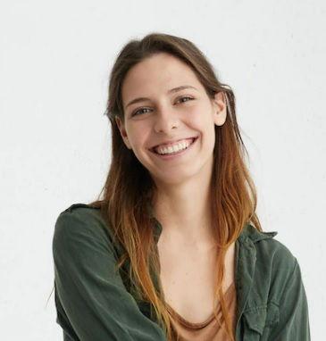

Nuestras Artistas

Maria: tiene 28 años, se dedica al arte en uñas desde los 18. Su experiencia en el rubro hace que todas las chicas quieran que ella les haga las uñas.

Julieta: tiene 25 años y ademas de esculpidora es profesora de yoga. Su paciencia hace que sus diseños sean perfectos.

Pia: tiene 18 años, desde chica vio a su mama dedicarse al diseño y escultura que empezo a practicar desde muy chica.